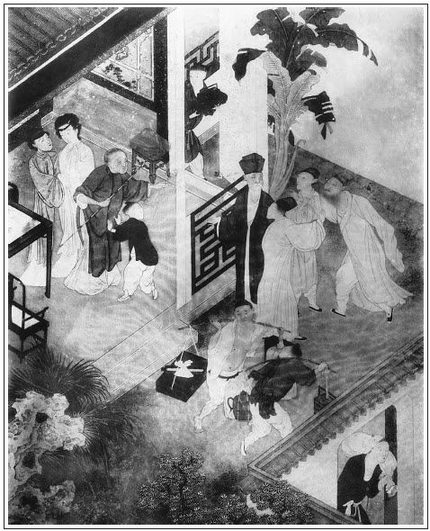

張回上文自看打虎至六回終，皆是為一金蓮，不惜費筆費墨寫此數回大書，作者至此當亦少歇。乃於前文王婆遇雨半回，層層脫卸下來，至此又重新用通身氣力通身智慧，又寫此一篇花團錦簇之文，特特與第一回作對，其力量亦相等。人謂其精神不懈，何其不歇一歇？不知他於土文「遇雨」文內，即已一路歇來，至此乃歇後復振之文，讀者要便被他瞞過去也。知此回文字精警，則益信前「遇雨」文字為層層脫卸此回文字也。
夫以《金瓶梅》為名，是金蓮、瓶兒、春梅，為作者特特用意欲寫之人。乃前文開講，使出瓶兒，恰似等不得寫金蓮，便要寫瓶兒者。乃今既寫金蓮，偏不寫瓶兒，偏又寫一玉樓。夫必寫一玉樓，且毋論其文章穿插，欲急故緩，不肯使人便見瓶兒之妙。第問其必寫玉樓一人何故？作者命名之意，非深思不能得也。王樓之名，非小名，非別號，又非在楊家時即有此號，乃進西門慶家，排行第三，號曰玉樓，是西門慶號之也。號之雲者，作妾之別說也。印此「玉樓」二字，已使孟三姐眼淚洗面，欲生欲死也。乃「玉樓」二字，固是作者為主起也，非真個有一西門慶為之起此名也。作者意固奈何？有云：「玉樓人醉杏花天。」然則玉樓者，又杏花之別說也。必杏花又奈何？言其日邊仙種，本該倚雲栽之，忽因雪早，幾致零落。見其一種春風，別具嫣然。不似蓮出污泥，瓶梅為無根之奔也。觀其命名，則作者待玉樓，自是特特用異樣筆墨，寫一絕世美人，高眾妾一等。見得如此等美人，亦遭荼毒，然既已荼毒之，卻又常屈之於冷淡之地，使之含酸抱屈。本不肯學好，又不能知趣，而世之如玉樓者正復不少，則作者殆亦少寓意於玉樓乎？況夫金瓶梅花，已佔早春，而玉樓春杏，必不與之爭一日之先。然至其時日，亦各自有一番爛熳，到那結果時，梅酸杏甜，則一命名之間，而後文結果皆見。要知玉樓在西門慶家，則亦雖有如無之人，而西門慶必欲有之者，本意利其財而已。觀楊姑娘一爭，張四舅一鬧，則總是為玉樓有錢作襯。而玉樓有錢，見西門慶既貪不義之色，且貪無恥之財，總之良心喪絕，為作者罵盡世人地也。夫本意為西門貪財處，寫出一玉樓來，則本意原不為色。故雖有美如此，而亦淡然置之。見得財的利害，比色更利害些，是此書本意也。
寫玉樓必會月琴者，是一眼早覷定金、瓶、梅與玉樓數人，同歸一穴之後，當如何如何令其相與一番，為吳神仙一結地步也。則一月琴，又是作者弄神弄鬼之處也。
金蓮琵琶，為妒寵作線，王樓月琴，為翡翠軒作地，翡翠軒必用月琴者，見得西門對面非知音之人。一面寫金、瓶、梅三人熱處，一面使玉樓冷處不言已見。是作者特借一月琴，翡翠軒、葡萄架的文字，皆借入玉樓傳中也。文字神妙處，誰謂是粗心人可解。
若雲杏花喻玉樓是我強扭出來的，請問何以必用薛嫂說來？本在楊家，後嫁李家，而李衙內必令陶媽媽來說親事也。試細思之，知予言非謬。
然則後春而開者，何以必用杏也哉？杏者，幸也。幸其不終淪沒於西門氏之手也。
然則《金瓶梅》何言之？予又因玉樓而知其名《金瓶梅》者矣。蓋言雖是一枝梅花，春光爛熳，卻是金瓶內養之者。夫即根依土石，枝撼煙雲，其開花時，亦為日有限，轉眼有黃鶴玉笛之悲。奈之何折下殘枝，能有多少生意，而金瓶中之水，能支幾刻殘春哉？明喻西門慶之炎熱危如朝露，飄忽如殘花，轉眼韶華頓成幻景。總是為一百回內、第一回中色空財空下一頂門針。而或謂如《檮杌》之意，是皆欲強作者為西門開帳簿之人，烏知所謂《金瓶梅》者哉。
於春光在金瓶梅花時，卻有一待時之杏，甘心忍耐於不言之天。是固知時知命知天之人，一任炎涼世態，均不能動之。則又作者自己身份地步，色色古絕，而又教世人處此炎涼之法也。有此一番見解，方做得此書出來，方有玉樓一個人出來。誰謂有粗心之人，止看得西門慶又添一妾之冤於千古哉！
讀至此，然後又知先有卓丟兒，所以必姓卓也。何則？夫丟兒固雲為孟三姐出缺，奈何必姓卓哉？又是作者明明指人以處炎涼不動之本也。蓋雲要處炎涼，必須聽天由命，守運待時。而聽天由命，守運待時，豈易言者哉？又必卓然不動，持守堅牢，一任金瓶梅花笑我，我只是不為所動，故又要向卓字兒上先安腳跟牢定，死下工夫也。故三娘之位，必須卓姓，先死守之，以待玉樓也。
玉樓必自小行三，而又為三娘者，見得杏花必待三月也。
作者寫玉樓，是具立身處世學問，方寫得出來。而寫一玉樓，又是教人處世入世之法。固知水月即空，猶是末著，見不能如此，或者空去，故後寫月娘好佛，孝哥幻化等因，猶是為不能如玉樓之人，再下一轉語，另開一法門也。
瓶兒於竹山進讒時，一說即信，壞在容易信。玉樓於張四進讒時，屢說不信，壞在不肯輕信。此何故也？瓶兒悔牆頭之物輕輕失去，心本悔矣，故一說即入。玉樓為薛嫂填房之說著迷，心已迷矣，故屢說不改，各人有各人的心事，用筆深淺皆到。
其前文批玉樓時，亦常再四深思作者之意，而不能見及此，到底隔膜一層。今探得此意，遂使一部中有名之人，其名姓，皆是作者眼前用意，明白曉暢，彼此貫通，不煩思索，而勸懲皆出也。
如月娘以月名者，見得有圓有缺，喻後文之守寡也；有明有晦，喻有好處，有不好處，有賢時有妒時也。以李嬌兒名者，見得桃李春風牆外枝也。以雪娥為言者，見得與諸花不投，而又獨與梅花作祟，故與春梅不合，而受辱守備府，是又作者深恨歲寒之凌冽，特特要使梅花翻案也；夫必使梅花翻雪案，是又一部《離騷》無處發洩，所以著書立說之深意也。至瓶兒，則為承注梅花之器，而又為金之所必爭，蓮之所必爭者也。何則？瓶為金瓶，未為瓶之金，必妒其成器；瓶即不為金瓶，或銅或玉，或窯器，則金又憤己不得為金瓶以盛之，而使其以瓶兒之樣以勝我也，是又妒其勝已。而時值三伏，則瓶為蓮用，故翡翠軒可續以葡萄架；而三冬水凍，瓶不為蓮用，故琵琶必彈於雪夜，而象棋必下於元宵前後也。此蓋因要寫一金蓮妒死之人，故名瓶兒，見其本為一氣相通，同類共事之人，而又不相投者也。張眉此等意皆具寓意說內，因原從玉樓一名看入，且另有數解可參，故並存之。至於春梅，則又作者最幸有此，又最不堪此，故以兩種心事，定此一人也。何則？夫梅花可稱，全在雪裡，寒歲臘底，是其一種雅操，本自傲骨流出，宜乎為高人節婦忠臣美人。今加一「春」字，便見得爛熳不堪，即有色香當時，亦世俗所爭賞，而一段春消息，早已漏洩東風，為幽人歲寒友所不肯一置目於其間者也。至於彤雲凍雪，為人所最不能耐之時，倘一旦有一樹春梅，開於旭日和風之際，遂使從前寂寞頓解。此必寫春梅至淫死者，為厭說韶華；而必使雪娥受辱者，為不耐窮愁，故必雙寫至此也。夫一部《金瓶梅》，總是「冷熱」二字，而厭說韶華，無奈窮愁，又作者與今古有心人，同困此冷熱中之苦。今皆於一春梅發洩之，宜乎其下半部單寫春梅也。至於蕙蓮原名金蓮，王六兒又重潘六兒，又是作者特特寫出。此固一金蓮，彼又一金蓮，尋來者一金蓮，尋去者又一金蓮，眼前淫婦人，比比皆同，不特一潘氏為可殺也。況乎有潘金蓮，而宋金蓮不得仍名金蓮，且不得再說金蓮，更不得再穿金蓮；即欲令其拾金蓮之舊金蓮，以為金蓮，亦必不肯依；至後且不容世有一宋金蓮改名之宋蕙蓮；且死後，並不容其山洞中有一物在人亡之遺下一隻金蓮，則金蓮之妒之惡、之可殺可割，想雖有百金蓮，總未如潘金蓮之妒之惡、之可殺可割也。至於王六兒之品簫，更勝金蓮之品玉；而金蓮之一次討紗裙，又不如王六兒之夜夜後庭花。是雖有百金蓮，不如一金蓮之潘六兒，又有一後來居上之王六兒奪其寵，爭其能，睥睨其後，則一六兒又難敵無窮無盡勝六兒之六兒。然淫婦之惡，莫過於潘金蓮，故特特著之於《金瓶梅》，使知潘金蓮者可殺可割，而淫婦之惡，更有勝於潘六兒者。故又特特著此《金瓶梅》，使知幾為淫婦之惡，更殺不足、割不盡也。所以兩金蓮遇，而一金蓮死，兩淫不並立；兩六兒合而迷六兒者死．兩陰不能當，兩斧效立見也。作者所以使蕙蓮必原名金蓮，而六兒後又有一六兒也。至於陳敬濟，亦有深意。見得他一味小慇勤，遂使西門、月娘被他瞞過，而金蓮、春梅終著了他的道兒也。故謂之敬濟。而又見陳洪當傾家敗產之時，其子敬有人心，自當敬以濟此艱難，不敢一日安枕下食，乃敬濟如此，西門有保全扶養之恩，而其婿苟有人心，自當敬以濟此恩遇，不可一事欺，心負行，而敬濟又如彼。至若其父為小人，敬濟當敬以干蠱，濟此天倫之丑；其岳為惡人，敬濟又當敬以申諫，以盡我親親之誼，乃敬濟又如此如此，如彼如彼。嗚呼，所謂敬濟者，安在哉？至其後做花子，做道士．一敗塗地，終於不敬，其何以濟？宜其死而後已也。則又作者特地為後生作針砭也。至於秋菊，與梅、蓮作仇，而玉簫與月娘作婢，又以類相反而相從也。李桂姐為不祥之物，雜本之人，蓋桂生李上，豈非不祥雜本？而吳銀兒，言非他的人兒，皆我的銀兒也。若夫愛月，則西門臨死相識之人，去其死時，為日不久，大約一年有餘，言論月論日的日子，死到頭上，猶自斫喪也，猶姦淫他人也。銀瓶有落井之讖，故解衣銀姐，瓶將沉矣。月桂生炎涼代嬗之時，故趨炎認女，必於月娘，而即於最炎時露一線秋風。若夫桂出則蓮凋，故金蓮受辱，即在梳櫳桂兒之後。而眾卉成林，春光自盡，故林太太出，而西門氏之勢已鐘鳴漏盡矣。他如此類，義不勝收。偶因玉樓一名，打透元關，遂勢如破竹，觸處皆通，不特作者精神俱出，即批者亦肺腑皆暢也。文章當攻其堅處，一堅破，而他難不足為敵矣。信然，信然。其寫月娘為正，自是諸花共一月。李花最早，故次之。杏占三春，故三之。雪必於冬，冬為第四季，故四之。蓮於五月勝，六月大勝，故五排而六行之。瓶可養諸花，故排之以末。而春梅早雖極早，卻因為蓮花培植，故必自六月遲至明年春日，方是他芬芳吐氣之時，故又在守備府中方顯也。而蓮杏得時之際，非梅花之時，故在西門家只用影寫也。
玉樓為處此炎涼之方，春梅為翻此炎涼之案，是以二人結果獨佳。以其為春梅太爛熳了，故又至淫死也。
此回內出春梅，人知此回出春梅為巧，不知其一目中已於「大丫頭」三字內已出了春梅。此處蓋又一掩映上文，然終是第二筆矣。於其第一筆，誰肯看之哉？試想無教大丫頭一筆在前，此處即出此一筆，有何深趣？甚矣，看文者休辜負了人家文字矣。
作者寫玉樓，不是寫他被西門所辱，卻是寫他能忍辱。不然看他後文，純用十二分精采結果玉樓，是何故又使他為西門所辱，為失節之人？作者必於世，亦有大不得已之事。如史公之下蠶室，孫子之刖雙足，乃一腔憤懣而作此書。言身已辱矣，惟存此牢騷不平之言十世，以為後有知心，當悲我之辱身屈志，而負才淪落於污泥也。且其受辱，必為人所誤，故深恨友生，追思兄弟，而作熱結、冷遇之文，且必因洩機之故受辱，故有倪秀才、溫秀才之串通等事，而點出機不密則禍成之語，必誤信人言，又有吃人哄怕之言。信乎，作者為史公之忍辱著書，豈如尋常小說家之漫肆空談也哉！
月琴與胡珠，雙結入一百回內。蓋月琴寓悲憤之意，胡珠乃自悲其才也。月琴者，阮也。阮路之哭，千古傷心。故玉樓彈阮，而愛姐亦彈阮，玉樓為西門所污，愛姐亦為敬濟所污二人正是一樣心事，則又作者重重憤懣之意。愛姐抱月琴而尋父母，則其阮途之哭，真抱恨無窮。不料後古而有予為之作一知己。噫！可為作者灑酒化囚蟲矣。
詩曰：
我做媒人實自能，全憑兩腿走慇勤。
唇槍慣把鰥男配，舌劍能調烈女心。
利市花常頭上帶，喜筵餅錠袖中撐。
只有一件不堪處，半是成人半敗人。張旁含酸在此。

話說西門慶家中張眉薛嫂，必云「西門家中」，惡有所自也。一個賣翠花的薛嫂兒，提著花廂兒，一地裡尋西門慶不著。因見西門慶貼身使的小廝玳安兒，便問道：「大官人在那裡？」玳安道：「俺爹在鋪子裡和傅二叔算帳。」原來西門慶家開生藥鋪，主管姓傅名銘，字自新，排行第二，因此呼他做傅二叔。這薛嫂聽了，一直走到鋪子門首，掀開簾子，見西門慶正與主管算帳，便點點頭兒，喚他出來。西門慶見是薛嫂兒，連忙撇了主管出來，兩人走在僻靜處說話。西門慶問道：「有甚話說？」薛嫂道：「我有一件親事，來對大官人說，管情中你老人家意，就頂死了的三娘的窩兒，繡旁入情。張夾則知卓二姐者，非三娘其人，乃三娘之名也。何如？」西門慶道：「你且說這件親事是那家的？」薛嫂道：「這位娘子，說起來你老人家也知道，就是南門外販布楊家的正頭娘子。手裡有一分好錢。南京拔步床也有兩張。四季衣服，插不下手去，也有四五隻箱子。金鐲銀釧不消說，手裡現銀子也有上千兩。好三梭布也有三二百筒。不料他男子漢去販布，死在外邊。他守寡了一年多，身邊又沒子女，止有一個小叔兒，才十歲。青春年少，守他什麼！張眉身污、途窮，所以著書。作者本意了了。有他家一個嫡親姑娘，要主張著他嫁人。這娘子今年不上二十五六歲，繡旁瞞四、五歲，妙。生的長挑身材，一表人物，打扮起來就是個燈人兒。風流俊俏，百伶百俐，當家立紀、針指女工、雙陸棋子不消說。不瞞大官人說，繡旁好頓挫。他娘家姓孟，排行三姐，就住在臭水巷。繡眉小小一地名，亦下得恰好。又會彈一手好月琴，大官人若見了，管情一箭就上垛。」西門慶聽見婦人會彈月琴，便可在他心上，張夾早已為翡翠軒三人。就問薛嫂兒：「既是這等，幾時相會看去？」薛嫂道：「相看到不打緊。我且和你老人家計議：繡眉引入彀，卻才勒住，細細商量，鬆緊合宜。如今他家一家子，只是姑娘大。雖是他娘舅張四，『山核桃──差著一隔哩』。這婆子原嫁與北邊半邊街徐公公房子裡住的孫歪頭。繡眉孫歪頭三字寫得活現，恰像真有其人。歪頭死了，這婆子守寡了三四十年，男花女花都無，只靠侄男侄女養活。大官人只倒在他身上求他。這婆子愛的是錢財，明知侄兒媳婦有東西，隨問什麼人家他也不管，只指望要幾兩銀子。大官人家裡有的是那囂段子，拿一段，買上一擔禮物，明日親去見他，再許他幾兩銀子，一拳打倒他。繡眉段子曰囂，禮物曰買上一擔，銀子曰許他幾兩，只數虛字，說得毫不費事，想見立言之妙。隨問旁邊有人說話，這婆子一力張主，誰敢怎的！」這薛嫂兒一席話，說的西門慶歡從額角眉尖出，喜向腮邊笑臉生。正是：
媒妁慇勤說始終，孟姬愛嫁富家翁。
有緣千里能相會，無緣對面不相逢。
西門慶當日與薛嫂相約下了，明日是好日期，就買禮往他姑娘家去。薛嫂說畢話，提著花廂兒去了。張旁細。西門慶進來和傅夥計算帳。張旁細。一宿晚景不題。
到次日，西門慶早起，打選衣帽整齊，拿了一段尺頭，買了四盤羹果，裝做一盒擔，叫人抬了。薛嫂領著，西門慶騎著頭口，小廝跟隨，逕來楊姑娘家門首。薛嫂先入去通報姑娘，說道：「近邊一個財主，繡旁先入。要和大娘子說親。我說一家只姑奶奶是大，先來覿面，親見過你老人家，講了話，繡旁遞局。然後才敢去門外相看。今日小媳婦領來，見在門首伺候。」婆子聽見，便道：「阿呀，繡旁傳神。保山，你如何不先來說聲！」一面吩咐丫鬟頓下好茶，一面道：「有請。」這薛嫂一力攛掇，先把盒擔抬進去擺下，打發空盒擔出去，就請西門慶進來相見。這西門慶頭戴纏綜大帽，一撒鉤絛，粉底皂靴，張夾富家氣象，卻是市井氣。進門見婆子拜四拜。婆子拄著拐，慌忙還下理去，西門慶哪裡肯，一口一聲只叫：「姑娘請受禮。」讓了半日，婆子受了半禮。分賓主坐下，薛嫂在旁邊打橫。婆子便道：「大官人貴姓？」薛嫂道：張夾只用媒人說，妙。「便是咱清河縣數一數二的財主，西門大官人。在縣前開個大生藥鋪，家中錢過北斗，米爛陳倉，沒個當家立紀的娘子。聞得咱家門外大娘子要嫁，特來見姑奶奶講說親事。」婆子道：「官人儻然要說俺侄兒媳婦，自恁來閒講罷了，何必費煩又買禮來，使老身卻之不恭，受之有愧。」西門慶道：「姑娘在上，張夾即叫「姑娘」。妙甚。沒的禮物，惶恐。」那婆子一面拜了兩拜謝了，收過禮物去，拿茶上來。吃畢，婆子開口道：「老身當言不言謂之懦。繡旁開口訣。我侄兒在時，掙了一分錢財，不幸先死了，如今都落在他手裡，說少也有上千兩銀子東西。官人做小做大我不管你，只要與我侄兒念上個好經。老身便是他親姑娘，又不隔從，就與上我一個棺材本，也不曾要了你家的。張夾婆子意在此，西門慶意亦在此。我破著老臉，和張四那老狗做臭毛鼠，替你兩個硬張主。娶過門時，遇生辰時節，官人放他來走走，就認俺這門窮親戚，也不過上你窮。」繡眉先入唸經，故正題目，然後說到自己，說自己卻提出張四一段，說得有條理，有斤兩，有拿手。張旁是婆子要上門，非要玉樓上門也。西門慶笑道：「你老人家放心，所說的話，我小人都知道了。只要你老人家主張得定，休說一個棺材本，就是十個，小人也來得起。」張夾幸得姑娘是孤身，若有眷屬，則此言如何？說著，便叫小廝拿過拜匣來，取出六錠三十兩雪花官銀，放在面前，說道：「這個不當甚麼，先與你老人家買盞茶吃，到明日娶過門時，還你七十兩銀子、兩疋緞子，與你老人家為送終之資。其四時八節，只管上門行走。」這老虔婆黑眼珠見了二三十兩白晃晃的官銀，滿面堆下笑來，說道：「官人在上，不是老身意小，自古先斷後不亂。」薛嫂在旁插口說：張夾插說。妙。「你老人家忒多心，那裡這等計較！我這大官人不是這等人，只恁還要掇著盒兒認親。你老人家不知，如今知縣知府相公也都來往，好不四海。你老人家能吃他多少？」一席話說的婆子屁滾尿流。吃了兩道茶，西門慶便要起身，婆子挽留不住。薛嫂道：「今日既見了姑奶奶，明日便好往門外相看。」婆子道：「我家侄兒媳婦不用大官人相，張夾一句侄媳。保山，你就說我說，不嫁這樣人家，再嫁甚樣人家！」張夾一句「官人」，總是銀子說話也。西門慶作辭起身。婆子道：「老身不知大官人下降，匆忙不曾預備，空了官人，休怪。」拄拐送出。送了兩步，西門慶讓回去了。薛嫂打發西門慶上馬，因說道：「我主張的有理麼？你老人家先回去罷，我還在這裡和他說句話。明日須早些往門外去。」西門慶便拿出一兩銀子來，與薛嫂做驢子錢。薛嫂接了，西門慶便上馬來家。他還在楊姑娘家說話飲酒，到日暮才歸家去。
話休饒舌。到次日，西門慶打選衣帽齊整，袖著插戴，騎著疋白馬，玳安、平安張夾平安於此帶出。兩個小廝跟隨，薛嫂兒騎著驢子，出的南門外來。不多時，到了楊家門首。卻是坐南朝北一間門樓，粉青照壁。張夾如見。薛嫂請西門慶下了馬，同進去。裡面儀門照牆，竹搶籬影壁，院內擺設榴樹盆景，台基上靛缸一溜，打布凳兩條。繡旁好映帶。張夾是布店。薛嫂推開朱紅隔扇，三間倒坐客位，上下椅桌光鮮，簾櫳瀟灑。薛嫂請西門慶坐了，一面走入裡邊。片晌出來，向西門慶耳邊說：「大娘子梳妝未了，你老人家請坐一坐。」只見一個小廝兒拿出一盞福仁泡茶來，西門慶吃了。這薛嫂一面指手畫腳與西門慶說：「這家中除了那頭姑娘，只這位娘子是大。張旁抹過張四。張夾姑娘大，又有娘子大，媒人口吻逼肖。雖有他小叔，還小哩，不曉得什麼。當初有過世的官人在鋪子裡，一日不算銀子，銅錢也賣兩大菠籮。毛青鞋面布，繡旁異想。俺每問他買，定要三分一尺。張夾總是用筆靈活。一日常有二三十染的吃飯，都是這位娘子主張整理。繡眉偏在沒要緊處寫照。手下使著兩個丫頭，一個小廝。大丫頭十五歲，吊起頭去了，名喚蘭香。小丫頭名喚小鸞，才十二歲。張夾隨手得出即出，不費手。到明日過門時，都跟他來。我替你老人家說成這親事，指望典兩間房兒住哩。」張夾惡極。西門慶道：「這不打緊。」薛嫂道：「你老人家去年買春梅，繡眉無意中點出春梅，冷甚，妙甚。許我幾疋大布，還沒與我。到明日不管一總謝罷了。」張夾我不知何故，看到此處，滿身痛快。要跳要舞。其文字之妙，我更批不出也。
正說著，只見使了個丫頭來叫薛嫂。不多時，只聞環珮叮咚，蘭麝馥郁，薛嫂忙掀開簾子，婦人出來。西門慶睜眼觀那婦人，但見：
月畫煙描，粉妝玉琢。張旁一篇《洛神》。俊龐兒不肥不瘦，俏身材難減難增。素額逗幾點微麻，天然美麗；緗裙露一雙小腳，周正堪憐。行過處花香細生，坐下時淹然百媚。張旁比金蓮妖淫之態如何？
西門慶一見滿心歡喜。婦人走到堂下，望上不端不正道了個萬福，就在對面椅子上坐下。西門慶眼不轉睛看了一回，婦人把頭低了。西門慶開言說：「小人妻亡已久，欲娶娘子管理家事，未知尊意如何？」那婦人偷眼看西門慶，見他人物風流，心下已十分中意，遂轉過臉來，問薛婆道：「官人貴庚？沒了娘子多少時了？」張旁玉樓著迷處在此。西門慶道：「小人虛度二十八歲，不幸先妻沒了一年有餘。不敢請問，娘子青春多少？」婦人道：「奴家是三十歲。」西門慶道：「原來長我二歲。」薛嫂在旁插口道：「妻大兩，黃金日日長。妻大三，黃金積如山。」繡眉雖套語，用在此處恰好。說著，只見小丫鬟拿出三盞蜜餞金橙子泡茶來。婦人起身，先取頭一盞，用纖手抹去盞邊水漬，繡旁舉止俏甚。遞與西門慶，道個萬福。薛嫂見婦人立起身，就趁空兒繡旁有竅。輕輕用手掀起婦人裙子來，正露出一對剛三寸、恰半叉、尖尖趫趫金蓮腳來，繡眉賣弄腳好處，妙在都不開口，只俏俏畫出。張旁全與金蓮對照、翻案。穿著雙大紅遍地金雲頭白綾高低鞋兒。繡旁動人。西門慶看了，滿心歡喜。婦人取第二盞茶來遞與薛嫂。他自取一盞陪坐。吃了茶，西門慶便叫玳安用方盒呈上錦帕二方、寶釵一對、金戒指六個，放在托盤內送過去。張旁何等正大，比偷娶、迎奸何如？薛嫂一面叫婦人拜謝了。因問官人行禮日期：「奴這裡好做預備。」西門慶道：「既蒙娘子見允，今月二十四日，張夾二十四。有些微禮過門來。六月初二准娶。」張夾六月初二。婦人道：「既然如此，奴明日就使人對姑娘說去。」薛嫂道：「大官人昨日已到姑奶奶府上講過話了。」婦人道：「姑娘說甚來？」薛嫂道：「姑奶奶聽見大官人說此樁事，好不喜歡！說道，不嫁這等人家，再嫁那樣人家！我就做硬主媒，保這門親事。」婦人道：「既是姑娘恁般說，又好了。」繡眉滿肚皮要嫁，只三字。張夾含蓄張四，妙。薛嫂道：「好大娘子，莫不俺做媒敢這等搗謊。」說畢，西門慶作辭起身。
薛嫂送出巷口，向西門慶說道：「看了這娘子，你老人家心下如何？」西門慶道：「薛嫂，其實累了你。」繡旁寫出中意。張夾《金瓶》獨擅此能，我願作文者步步學之也。薛嫂道：「你老人家先行一步，我和大娘子說句話就來。」西門慶騎馬進城去了。薛嫂轉來向婦人說道：「娘子，你嫁得這位官人也罷了。」婦人道：「但不知房裡有人沒有人？繡旁有含蓄。張旁止問有人，夢裡不知作妾。見作何生理？」薛嫂道：「好奶奶，就有房裡人，那個是成頭腦的？我說是謊，你過去就看出來。繡眉說得活活落落，絕有意味，卻又妙在斬釘截鐵，模寫處真匪夷所思。他老人家名目，誰不知道，清河縣數一數二的財主，有名賣生藥放官吏債西門慶大官人。知縣知府都和他來往。近日又與東京楊提督結親，張夾又映敬濟。都是四門親家，誰人敢惹他！」婦人安排酒飯，與薛嫂兒正吃著，只見他姑娘家使個小廝安童，盒子裡盛著四塊黃米面棗兒糕、兩塊糖、幾十個艾窩窩，張夾是北方食物，又襯姑娘身份。就來問：「曾受了那人家插定不曾？奶奶說來：這人家不嫁，待嫁甚人家。」婦人道：「多謝你奶奶掛心。今已留下插定了。」薛嫂道：「天麼，天麼！早是俺媒人不說謊，姑奶奶早說將來了。」繡眉口角宛然。婦人收了糕，取出盒子，裝了滿滿一盒子點心臘肉，又與了安童五六十文錢，說：「到家多拜上奶奶。那家日子定在二十四日行禮，出月初二日准娶。」小廝去了。薛嫂道：「姑奶奶家送來什麼？與我些，包了家去孩子吃。」婦人與了他一塊糖、十個艾窩窩，方才出門，不在話下。張夾閒情卻細。
且說他母舅張四，倚著他小外甥楊宗保，要圖留婦人東西，一心舉保大街坊尚推官兒子尚舉人為繼室。若小可人家，還有話說，不想聞得是西門慶定了，知他是把持官府的人，遂動不得了。尋思千方百計，不如破為上計。即走來對婦人說：「娘子不該接西門慶插定，還依我嫁尚舉人的是。他是詩禮人家，又有莊田地土，頗過得日子，強如嫁西門慶。那廝積年把持官府，刁徒潑皮。繡眉句句良言，可惜為破親而發。他家見有正頭娘子，乃是吳千戶家女兒，你過去做大是，做小是？況他房裡又有三四個老婆，除沒上頭的丫頭不算。你到他家，人多口多，還有的惹氣哩！」婦人聽見話頭，明知張四是破親之意，繡眉先被婦人看破，後便語言無味。張旁自誤在此。便佯說道：「自古船多不礙路。若他家有大娘子，我情願讓他做姐姐。雖然房裡人多，只要丈夫作主，若是丈夫喜歡，多亦何妨。丈夫若不喜歡，便只奴一個也難過日子。況且富貴人家，那家沒有四五個？張夾意曰：我固做大，只我能容人便是。所以後文含酸到地。你老人家不消多慮，奴過去自有道理，料不妨事。」張四道：「不獨這一件。他最慣打婦煞妻，又管挑販人口，稍不中意，就令媒婆賣了。繡眉破語雖毒，卻嫌太直。你受得他這氣麼？」婦人道：「四舅，你老人家差矣。男子漢雖利害，不打那勤謹省事之妻。張旁滿心填房。我到他家，把得家定，裡言不出，外言不入，他敢怎的奴？」張夾玉樓為人在是矣。張四道：「不是我打聽的，他家還有一個十四歲未出嫁的閨女，誠恐去到他家，三窩兩塊惹氣怎了？」繡眉此一破尤不動人。婦人道：「四舅說那裡話，奴到他家，大是大，小是小，待得孩兒們好，張旁滿心填房。不怕男子漢不歡喜，不怕女兒們不孝順。休說一個，便是十個也不妨事。」張四道：「還有一件最要緊的事，此人行止欠端，專一在外眠花臥柳。又裡虛外實，少人家債負。只怕坑陷了你。」婦人道：「四舅，你老人家又差矣。他少年人，就外邊做些風流勾當，也是常事。奴婦人家，那裡管得許多？繡眉護局中夾出喜愛真情，妙甚。張旁滿心填房。惹說虛實，常言道：世上錢財儻來物，那是長貧久富家？況姻緣事皆前生分定，你老人家到不消這樣費心。」張四見說不動婦人，到吃他搶白了幾句，好無顏色，吃了兩盞清茶，繡眉一清字傳冷落之神，令人絕倒。起身去了。有詩為證：張夾此處寫玉樓執迷，卻反映瓶兒待竹山之淺。
張四無端散楚言，姻緣誰想是前緣。
佳人心愛西門慶，說破咽喉總是閒。
張四羞慚歸家，與婆子商議，繡旁伏後罵句，細甚。單等婦人起身，指著外甥楊宗保，要攔奪婦人箱籠。
話休饒舌。到二十四日，張夾二十四日。西門慶行了禮。到二十六日，張夾二十六日。請十二位素僧張夾未與武大燒靈，先與楊宗錫燒靈。文字奇絕幻絕。唸經燒靈，都是他姑娘一力張主。張四到婦人將起身頭一日，請了幾位街坊眾鄰，來和婦人說話。此時薛嫂正引著西門慶家小廝伴當，並守備府裡討的一二十名軍牢，張夾又出守備。正進來搬抬婦人床帳、嫁妝箱籠。被張四攔住說道：「保山且休抬！有話講。」一面同了街坊鄰舍進來見婦人。坐下，張四先開言說：「列位高鄰聽著：大娘子在這裡，不該我張龍說，繡旁酷肖。你家男子漢楊宗錫與你這小叔楊宗保，都是我甥。今日不幸大外甥死了，空掙一場錢。有人主張著你，繡旁暗指姑娘。這也罷了。爭奈第二個外甥楊宗保年幼，一個業障都在我身上。他是你男子漢一母同胞所生，莫不家當沒他的份兒？今日對著列位高鄰在這裡，只把你箱籠打開，眼同眾人看一看，有東西沒東西，大家見個明白。」張夾無數話，總是東西。人情可歎。婦人聽言，一面哭起來，說道：「眾位聽著，你老人家差矣！奴不是歹意謀死了男子漢，今日添羞臉又嫁人。張夾又照金蓮。妙絕。他手裡有錢沒錢，人所共知，就是積攢了幾兩銀子，都使在這房子上。繡旁好出脫。房子我沒帶去，都留與小叔。家活等件，分毫不動。就是外邊有三四百兩銀子欠帳，文書合同已都交與你老人家，陸續討來家中盤纏。再有甚麼銀兩來？」張四道：「你沒銀兩也罷。如今只對著眾位打開箱籠看一看。就有，你還拿了去，我又不要你的。」張夾然則又何必看哉。婦人道：「莫不奴的鞋腳也要瞧不成？」
正亂著，只見姑娘拄拐自後而出。繡眉先讓張四與婦人鬧一陣，然後姑娘慢慢走出來。絕有情景。眾人便道：「姑娘出來。」都齊聲唱喏。姑娘還了萬福，陪眾人坐下。姑娘開口道：「列位高鄰在上，我是他是親姑娘，又不隔從，莫不沒我說處？死了的也是侄兒，活著的也是侄兒，十個指頭咬著都疼。如今休說他男子漢手裡沒錢，他就有十萬兩銀子，你只好看他一眼罷了。他身邊又無出，少女嫩婦的，你攔著不教他嫁人做什麼？」眾街鄰高聲道：「姑娘見得有理！」張夾鄰舍偏理會得姑娘話，妙。入情。婆子道：「難道他娘家陪的東西，也留下他的不成？他背地又不曾自與我什麼，繡眉此處無銀。說我護他，也要公道。不瞞列位說，我這侄兒媳婦平日有仁義，老身捨不得他，好溫克性兒。不然老身也不管著他。」那張四在旁把婆子瞅了一眼，繡旁逼真。說道：「你好公平心兒！鳳凰無寶處不落。」只這一句話道著婆子真病，登時怒起，紫漒了面皮，指定張四大罵道：「張四，你休胡言亂語！我雖不能是楊家正頭香主，你這老油嘴，是楊家那膫子㒲的？」繡眉罵得妙，才像孫歪頭的婆子。張四道：「我雖是異姓，兩個外甥是我姐姐養的，你這老咬蟲，女生外向，張夾然則兩人俱不姓楊。怎一頭放火，又一頭放水？」姑娘道：「賊沒廉恥老狗骨頭！他少女嫩婦的，你留他在屋裡，有何算計？既不是圖色慾，便欲起謀心，將錢肥己。」張四道：「我不是圖錢，只恐楊宗保後來大了，過不得日子。不似你這老殺才，搬著大引著小，黃貓兒黑尾。」姑娘道：「張四，你這老花根，老奴才，老粉嘴，你恁騙口張舌的好淡扯，張夾三字妙絕。到明日死了時，不使了繩子扛子。」張四道：「你這嚼舌頭老淫婦，掙將錢來焦尾靶，怪不得你無兒無女。」姑娘急了，罵道：「張四，賊老蒼根，老豬狗，我無兒無女，強似你家媽媽子穿寺院，養和尚，㒲道士，你還在睡夢裡。」當下兩個差些兒不曾打起來，張夾好住法，不然何時是了。多虧眾鄰舍勸住，說道：「老舅，你讓姑娘一句兒罷。」薛嫂兒見他二人嚷做一團，領西門慶家小廝伴當，並發來眾軍牢，趕人鬧裡，七手八腳將婦人床帳、妝奩、箱籠，扛的扛，抬的抬，一陣風都搬去了。繡眉收煞得妙。若等講清日子再扛抬，便呆矣。那張四氣的眼大睜著，半晌說不出話來。張旁西門娶玉樓，本意為錢，故用張四一爭以襯出之，非有閒筆寫張四也。眾鄰舍見不是事，安撫了一回，各人都散了。
到六月初二日，西門慶一頂大轎，四對紅紗燈籠，他小叔楊宗保頭上紮著髻兒，穿著青紗衣，撒騎在馬上，送他嫂子成親。張夾看官記清，後文看月娘如何送法。西門慶答賀了他一疋錦緞、一柄玉絛兒。蘭香、小鸞兩個丫頭，都跟了來鋪床疊被。小廝琴童方年十五歲，張夾琴童必十五歲，可想後文。亦帶過來伏侍。到三日，楊姑娘家並婦人兩個嫂子孟大嫂、二嫂都來做生日。西門慶與他楊姑娘七十兩銀子、兩疋尺頭。自此親戚來往不絕。張夾西門親戚，等大都皆此類。西門慶就把西廂房裡收拾三間，張夾記清西廂房。與他做房。排行第三，號玉樓，令家中大小都隨著叫三姨。到晚一連在他房中歇了三夜。
正是：
銷金帳裡，依然兩個新人；紅錦被中，現出兩般舊物。
有詩為證：
怎睹多情風月標，教人無福也難消。
風吹列子歸何處，夜夜嬋娟在柳梢。張夾風韻嫣然，自與金、瓶二人不同。
文回
一
文禹門云：批書者，總以玉樓為作者自況，不知從何處看出，而一口咬定，惟恐旁人不理會，時時點出，是可怪也。夫玉樓誠不愧為佳人，然亦有不滿人意處。夫死不滿兩年，家資頗頗過得，宗保勸；是乃夫胞弟，縱不能守，亦何必如此其亟，且又若此之草草也。豈一見西門慶，便魂飛魄散，如潘金蓮不能自主，如李瓶兒不能自由耶？婦人急色若斯，便非善良。做大做小，亦需探聽明白，（楊）〔張〕四之言不足信，有名有姓有則有勢之西門大官人，一訪便知。縱然謀死人家親夫，事未宣佈；彼月娘尚在，為吳千戶家女兒，琴童雖幼，亦可訪問出來。不能做大，且不做老二，抑屈於妓女之下，豈玉樓之初心乎？然何以一見便收插定也，謂非急色得乎？
「貞節」二字，扣定婦人女子，未免頭巾氣。但有財如此，有貌如此，人皆仰而望之。乃一見一個白淨小伙，便以終身相許，雖非蠢婦人，亦是醜婦人，作者何取乎而以之自況也？或曰；玉樓為媒人所誤耳，是誠然矣。自古英雄志士，一誤不能翻身，正自不一，矧一玉樓乎？玉樓不知而嫁之，為玉樓惜可也。若作者明知西門慶不是東西，既自以為玉樓，又何必定嫁西門，為終身之玷乎？豈作者亦嘗為仇人門下士乎？自比婦人，自比再蘸之寡婦，自比誤嫁匪類之粗愚而美艷之婦人，果有其事，不得不振筆直書，憑空結構，我操其權，何必作此無味狡獪乎？我固謂所批有然，有不然。
二
文禹門又云：玉樓之未過門也，心滿意足；玉樓既過門也，水落石出，月娘在上，嬌兒在旁，豈無目者，而能默然乎？此正作者漏洞處，亦正作者討巧處。若寫得太重，便失玉樓性情，若寫得太輕，又非當時景況。故但以三日後「來往不絕」，含糊了之。閱者萬勿被他瞞過，遂謂此等事，作亦無妨，而誤盡蒼生也。須於無文字中求之，此兩日內，有大不順心，大不快活，許多事情，包藏其中。從此家反宅亂，從此家敗人亡，皆在此一關頭上。吁嗟乎！《金瓶梅》之誤人，正在此而不在彼也。
按：前評應寫於光緒五年（1879）五月十一日於南陵縣署以約小屋中。後評則當寫於光緒六年（1880）。
「總以玉樓為作者自況」，系指張竹坡原評：「至其寫玉樓一人，則又作者經濟學問，色色自喻皆到。」